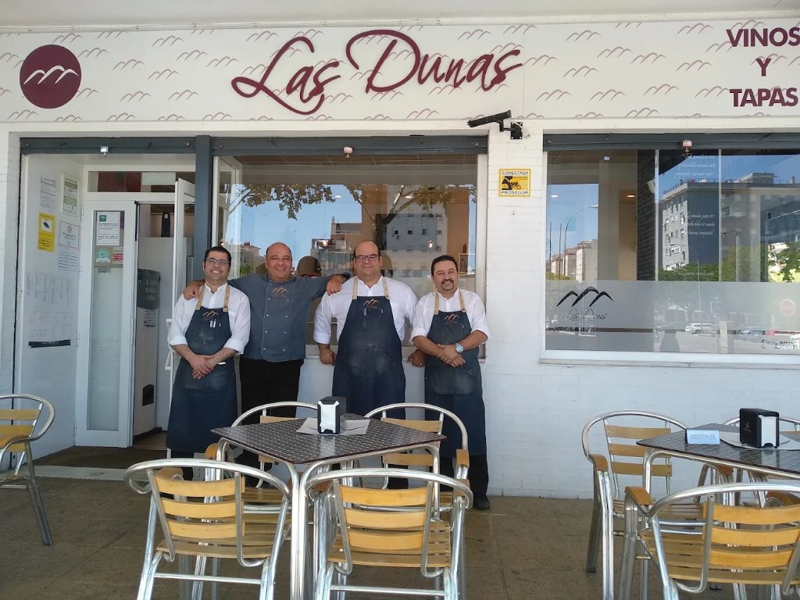

Recorrido fotográfico
Explora Las Dunas desde dentro
Descubre nuestro espacio y vive la experiencia de Las Dunas antes de venir a visitarnos.
Exterior · fachada y equipo
Recorrido 360° · Las Dunas
Explora Las Dunas desde dentro
Descubre nuestro espacio y vive la experiencia de Las Dunas antes de venir a visitarnos.
 Fotografía de la web oficial
Fotografía de la web oficial
Nuestra esencia · Más de 25 años
Cocina con raíces.
Curiosidad por lo nuevo.
En Las Dunas Vinos y Tapas nos gusta combinar la esencia de la cocina tradicional con nuevas formas de disfrutar la gastronomía. Cuidamos la materia prima, trabajamos cada detalle y queremos que cada visita sea una experiencia para recordar.
Cultura gastronómica sevillana, cocina mediterránea, atención cercana y servicio ágil.
Ver nuestra cartaLas Dunas · Vinos y Tapas
Nuestra carta
Reservas
Tu mesa te espera
Lunes cerrado · Martes a viernes 08:30–00:00 · Sábado 09:30–00:00 · Domingo 09:30–16:30
Grupos y eventos
A partir de 8 personas,
servimos platos.
Comidas de empresa, celebraciones y encuentros con amigos. Contacta con el restaurante para consultar disponibilidad y solicitar presupuesto.
Visítanos
C/ Flor de Albahaca, 7
Local 2
41020 Sevilla · Sevilla Este
Horario publicado
- Lunes
- Cerrado
- Martes–viernes
- 08:30–00:00
- Sábado
- 09:30–00:00
- Domingo
- 09:30–16:30